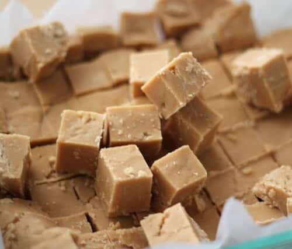

Peanut Butter Fudge

Delicious creamy fudge!
This is a recipie for my Great Grandmother's Peanut butter fudge.
It is probably the most delicious fudge i've ever tasted and would like
to share it with the world!
Ingredients
- 5-6 cups of brown sugar
- 2 cups of peanut butter
- 1 tspn of vanilla extract
- 1 cup of evaporated milk
Procedure
- Add Sugar and evaporated milk in sauce pan over low heat
- stir every 30 seconds for 5-10 seconds so the suagr doesn't burn to the bottom for 15 minutes or until bubbling
- whhen bubbling turn up heat to high until it looks like is boiling then take off heat
- add peanutbutter and vanilla extract and stir untill shine is gone
- transfer content of pot into backing tray and let sit until hard.
Return to main page